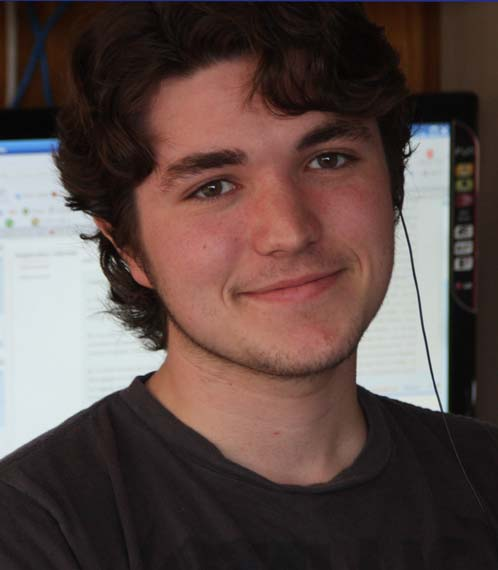
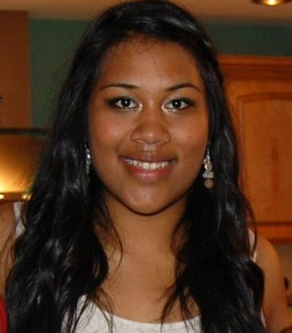

Tutors
Meet the current and past tutors below, as well as the faculty sponsors. Stop by HR 530 during tutoring sessions to say hello!
Current Tutors
-
Wilson Giese
Pending. Wilson has been with the CS Tutoring Center since Fall 2013.
-

Michael Murphy
Pending. Michael has been with the CS Tutoring Center since Fall 2013.
-

Alyssa Pohahau
Pending. Alyssa has been with the CS Tutoring Center since Spring 2013.
-
Kevin Porter
My name is Kevin Porter. I grew up in San Diego playing soccer before coming to USF where I found a new passion in computer science. My passion for computer science stems from the fact that when you are done working on a computer science project you generally have something that you can use. This, to me, makes every computer science project interesting because you are working toward a finished product that does something rather than a paper or assignment that you will never look at again.
Kevin has been with the CS Tutoring Center since Spring 2013.
Faculty Sponsors
-

Sophie Engle
Professor Sophie Engle teaches CS 212 Software Development, CS 360 Data Visualization, MSAN 622 Information Visualization, and many other courses. Her research focuses on applied data visualization (especially to problems in computer security) and computer science education. Sophie is the current faculty sponsor.
-
Dave Wolber
Professor David Wolber launched the CS Tutoring Center in Spring 2013. He is the author of App Inventor: Create Your Own Android Apps along with Hal Abelson, Ellen Spertus and Liz Looney from the App Inventor team, runs AppInventor.org which provides on-line, video-based teaching lessons, and teaches App Inventor in his CS 107 Computing, Mobile Apps, and the Web course. David began teaching App Inventor as part of Google's 2009 pilot program involving ten universities. In 2010, he received a grant from Google to work with the App Inventor team and authored the advanced tutorials that appear on the App Inventor site.
Past Tutors
Tutors are also recipients of the Outstanding Student-Teacher Award. Find previous tutors and awardees below.
- Stealy Morneau, Spring 2013
- Edric Orense, Spring 2013